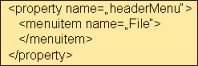

Welcome to
Property Editor
With the Property Editor you can define a property's value without any Java coding. Use the Property Editor for...
(1) MENU-MENUCOLLECTIONPROP (2) ROWTABSUBPAGES-PAGESPROP (3) ICONLIST-ICONLISTPROP (4) And any property that provides for a simple data type (e.g. string)

Define multiple values by adding a new data mode. Imagine a drop down menu (MENU control) that switches between a disabled/ enabled menu structure upon the application status. For each status create a XML data mode here and switch between the modes on runtime by calling method setXMLDataMode of class Adapter.